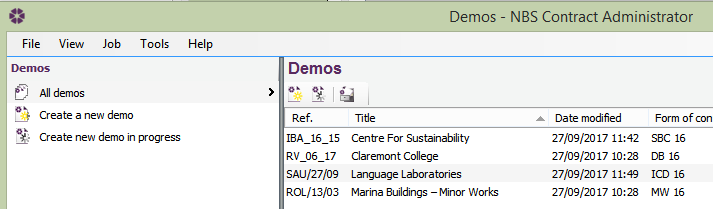
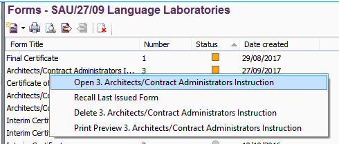
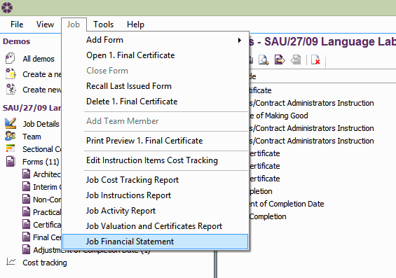

Browsing Demo Jobs |
Within NBS Contract Administrator, there are a number of demo jobs set up for various forms of contract. These jobs are there for reference purposes, and it may be useful to have a look at each demo job and become accustomed to the functionality within the software.
To open the demo jobs select View > Demo Jobs from the menu:
The job list will change to display the demo jobs.

Click on the desired job to open it and all of the forms included in the Job will be displayed in the Forms list. There are various ways to open the individual forms:

Using the Demo Jobs is a good way to view the various reports which display Financial and Progress Reporting. To view one of the Financial or Progress Reports, go to View and select the appropriate Job Report/Financial Statement from the options listed:
Job Cost Tracking Report
This report gives a break down of all draft and issued Instructions
within a Job. It gives a summary of all individuals Items within the job and
the overall estimated, claimed and agreed costs.
Job Instructions Report
This gives a summary of all issued Instructions within a job and
their estimated impact on the contract sum. A summary of draft
Instructions is presented in a separate table.
Job Activity Report
This gives a chronological summary of all issued Forms
on a job, with a summary of draft Forms presented in a
separate table. It shows the commitments made (the estimated adjustments to the
contract sum as detailed on issued Instructions) and the amount of money
certified on Payment Certificates, and uses both to keep a running total of the
amount still outstanding on the contract.
Job Valuation and Certificates Report
This report deals with all the money on a Job. It lists all the Payment
Certificates, detailing the current amount retained by the Employer and the
outstanding contract value. Please Note: Draft Forms are not included in this report.
Job Financial Statement Report
This report shows the financial effect of all issued Instructions, grouped by
Instruction Type. It also details all the payments made, as well as the
outstanding contract amount. Towards the end of the report is a list of
nominated sub-contractors applicable to the job. Please Note: Draft forms are not included on
this report.

See also:
Reports
Instruction items cost tracking